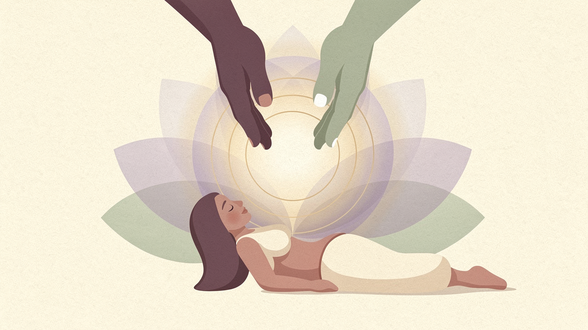

Distance Reiki Sessions Online
Experience the gentle flow of universal life energy from the comfort of your home. Distance Reiki sessions are fully effective online — deep relaxation, restored balance, and renewed clarity await.

What is Reiki?
Reiki is a Japanese energy work practice developed by Mikao Usui in the early 20th century. The word Reiki comes from two Japanese words: Rei (universal/spiritual) and Ki (life energy). Based on the principle that life energy flows through all living beings, Reiki practitioners channel this universal energy through their hands — or in distance sessions, through focused intention — to support the natural balance of the body, mind, and spirit.
Distance Reiki is grounded in the principle that energy is not limited by physical space. Using specific symbols and techniques, a Reiki practitioner can send energy to a recipient anywhere in the world. During an online session, many clients report sensations of warmth, tingling, deep relaxation, or a profound sense of calm — without the practitioner being physically present.
Reiki works on multiple levels simultaneously — physical, emotional, mental, and spiritual — supporting the body's own capacity for balance. It is gentle, non-invasive, and suitable for people of all ages and states of health.
How a Distance Reiki Session Works
Set Your Intention
Share what you'd like to focus on — whether it's stress reduction, clarity, a specific area of the body, or simply receiving restorative energy. Your intention guides the session.
Get Comfortable
Lie down or sit in a relaxed position in your own space — your bed, sofa, or quiet corner. The practitioner will guide you to prepare yourself to receive.
Receive the Session
The practitioner channels and sends energy while you rest with eyes closed. Many clients drift into deep relaxation or sleep — allow whatever arises to simply be.
Debrief & Integration
Practitioner shares their observations and you discuss what you experienced. You'll receive guidance on integrating the energy shift into your daily life.
Benefits of Reiki
Deep Relaxation
Many clients enter a state of deep calm during a session — releasing accumulated tension from the nervous system. Your body receives the signal it's safe to rest and restore.
Restored Inner Balance
Reiki supports the free flow of energy through the body's centres (chakras), addressing blockages that can manifest as fatigue, emotional heaviness, or a sense of being stuck.
From Your Own Home
Distance sessions are fully effective — no need to travel. Receive your session from your sofa, bed, or wherever feels most comfortable. Energy transcends physical distance.
Frequently Asked Questions
Yes. Distance Reiki is a well-established practice within the Reiki tradition, using specific symbols (Hon Sha Ze Sho Nen) to send energy across space and time. Many clients report the same sensations and experiences as in-person sessions.
Simply lie down or sit comfortably, close your eyes, and relax. You don't need to do anything specific — just be open to receiving. Some clients meditate, others simply rest.
Sessions typically last 45–60 minutes, though this can vary by practitioner. Check with your chosen practitioner for their specific session length and pricing.
Reiki is generally considered safe and suitable for most people, including children and the elderly. It is not a replacement for medical care, but can be used alongside conventional medicine to support overall wellbeing.
Openness helps, but belief is not a prerequisite. Many practitioners note that Reiki works even when clients are sceptical. The energy operates independently of intellectual acceptance.
New to Reiki?
Read our beginner's guide — what Reiki is, how a session works, and how to know if it's right for you.
Read: What Is Reiki? →Or, if you're trying Reiki for stress or anxiety: Reiki for Anxiety: What the Research Actually Says →
Are You a Reiki Practitioner?
Join Holistic Unity and offer distance Reiki sessions to clients worldwide seeking energy balance, relaxation, and inner calm.
Become a Holistic Unity Practitioner